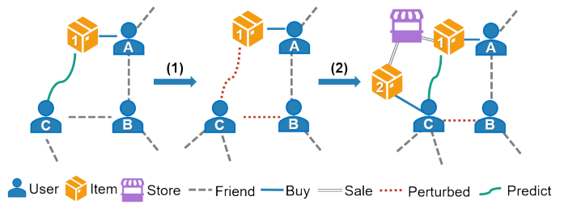
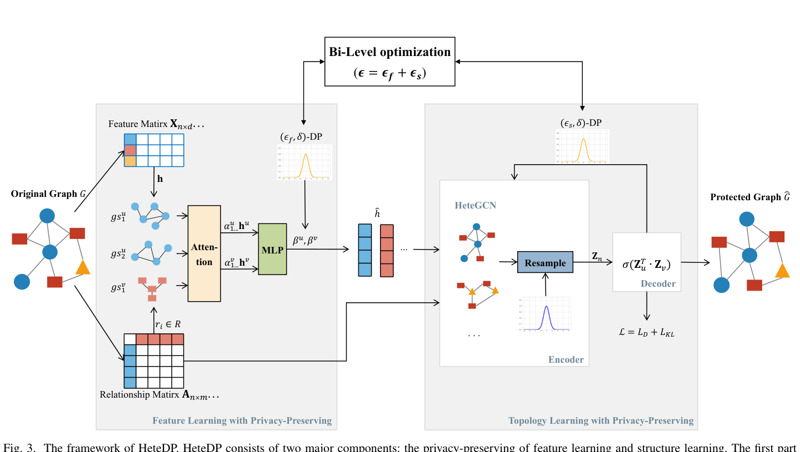

Heterogeneous Graph Neural Network for Privacy-Preserving Recommendation (面向隐私保护的异构图神经网络推荐)
- 会议/期刊: ICDM 2022
- 作者与机构: Yuecen Wei, Xingcheng Fu, Qingyun Sun, Hao Peng, Jia Wu, Jinyan Wang, Xianxian Li（广西师范大学、北京航空航天大学、麦考瑞大学）
- 推荐链路定位: 召回（异构图用户/物品表征学习 + 链接预测式召回打分）
- 研究方向: 去偏公平、可信隐私与工业架构 / 图神经网络与知识图谱推荐
- 论文原文: https://arxiv.org/abs/2210.00538v2
- 开源代码: https://github.com/AixWinnie/HeteDP
TL;DR (1分钟核心速览)
同构图上的差分隐私只保护同类型节点与边，而真实推荐系统把用户、物品、店铺、字段等融合为异构图，跨类型高阶邻居与拓扑属性（度、四边形计数）仍可被反推购买行为。本文提出 HeteDP：特征端按「邻居注意力 × 语义注意力」自适应标定高斯噪声敏感度，拓扑端用 HeteGCN-VGAE + DP-SGD 梯度裁剪加噪重构边，并用双层优化分配全局预算 \(\epsilon=\epsilon_f+\epsilon_s\)。在 ACM/DBLP/Amazon/IMDB 四库、节点分类（F1）与链接预测（ROC-AUC）双任务上，LP 相对 RGCN 分别提升 37.2%（DBLP）、10.4%（IMDB），代价是 ACM/DBLP 的 NC 在\(\epsilon\le0.1\) 时崩塌。
Background & Motivation (背景与核心矛盾)
- 主流范式: 推荐侧用 HGNN（RGCN / HGT / HetGNN / HGConv / Metapath2vec）在由社交关系与物品侧信息拼成的异构信息网络（HIN）上聚合多类型邻居，提升表征与预测能力。
- 前人局限: (1) 图隐私工作（DPGGAN、GERAI 等）沿用同构图的边扰动 / 节点属性扰动，只覆盖同类型节点关系，异构图里跨类型元路径携带的语义依赖完全没护住；(2) 攻击者可拿同拓扑结构的公开图做背景知识比对，仅凭度数与四边形等拓扑属性即可定位"用户 A–商户 B"的购买边。
- 核心洞察 (Key Insight): 非 IID 图数据使基于 IID 假设的朴素 DP 失效；隐私泄露同时发生在特征层与拓扑层，且两层对噪声的容忍度不同——噪声尺度必须随节点在图中的"语义重要性"（邻居影响 \(\alpha\)、元路径语义权重\(\beta\)）变化，而非全局统一加噪。
- 本文切入点: 把异构图的推荐学习转化为"带语义约束的链接预测"，在特征与拓扑两个阶段分别注入 DP 噪声，再把"预算怎么分"表述为双层优化。

Method (核心方法设计)
1. 整体框架 (Overall Architecture)
输入异构图 \(G=(V,E,\phi,\psi)\)，先按元路径拆成若干语义子图\(g_s^m\)；第一阶段在子图上做多头注意力聚合（层内\(\alpha_u^{(m)}\)）与语义级注意力融合（跨元路径\(\beta_m\)），得到节点表征\(z_u\)后按\(\alpha\beta\)加权的敏感度注入高斯噪声，输出扰动特征\(\tilde{h}\)；第二阶段把\(\tilde{h}\)送入 HeteGCN 编码的变分图自编码器（VGAE），内积解码器重构多关系边，反向传播时先做\(L_2\)梯度裁剪再注入高斯噪声（DP-SGD），即完成拓扑保护。两阶段共享全局预算\(\epsilon=\epsilon_f+\epsilon_s\)，由双层优化在外层调\(\epsilon_s\)、内层调\(\epsilon_f\) 以求隐私–效用折中。推理时直接用重构器给出的边概率作为召回打分。
flowchart TD
A["异构图 G：元路径语义子图 g_s^m"] --> B["多头注意力 α + 语义注意力 β 融合"]
B --> C["敏感度 Δ₂S_feat=α·β·‖S(D)-S(D')‖₂ 加噪 → h̃"]
C --> D["HeteGCN 编码 + 重参数化 → VGAE 内积解码重构边"]
D --> E["梯度裁剪 C + DP-SGD 加噪 → 拓扑保护"]
E --> F["双层优化分配 ε_f / ε_s"]
F --> G["NC(F1) / LP(ROC-AUC) 下游任务"]
2. 关键设计拆解 (Key Designs)
-
语义–邻居双注意力敏感度自适应加噪：痛点是对全图统一加噪要么毁效用、要么护不住重要节点。本文把第 \(l\)层注意力\(\alpha_u^{(m)}\)与语义权重\(\beta_m=\mathrm{Softmax}(W_m)\)乘积作为敏感度缩放因子，得到\(\Delta_2 S_{feat}=\max_{D,D'}\alpha_u^m\beta_m\|S(D)-S(D')\|_2\)，并注入\(\tilde{h}=z_u+\lambda\cdot\mathcal{N}\big(0,\sigma_{\epsilon_f}^2(\Delta_2 S_{feat})^2 I\big)\)。直觉：语义上"信息量越大"的节点被加更多噪声，正好对冲攻击者从高阶语义反推偏好的路径；低影响节点少加噪以保住整体效用。
-
异构 VGAE 上的 DP-SGD 拓扑保护：单纯扰动边会让攻击者改用拓扑属性推断，因此改在梯度上加噪。编码器按关系子图聚合 \(\tilde{h}_u^{(l+1)}=\sigma\big(\sum_{v\in N(u)}\zeta w^l\tilde{h}_v^l\big)\)，解码器用\(\sigma(z_u^\top z_v)\)重构边，每 batch 先裁剪再注入噪声：\(\tilde{g}=\frac{1}{|B|}\big(\sum_{i\in B}g_i^R/\max(1,\|g_i^R\|_2/C)+\mathcal{N}(0,\sigma_{\epsilon_s}^2C^2I)\big)\)，其中裁剪阈值\(C\)即拓扑侧敏感度\(\Delta_2 S_{topo}=C\)。直觉：把"边是否暴露"转化为"模型梯度是否可被反演"，同时用裁剪把单条边的贡献封顶，天然满足边级 DP。
-
训练目标与双层预算分配：总损失 \(\mathcal{L}=\mathcal{L}_D^{r}-\sum_{i\in\langle u,v\rangle}\mathrm{KL}\big(q_i\|p(Z_i)\big)\)，其中\(\mathcal{L}_D^{r}=-\log\sigma(q_{u,v})-k\cdot\mathbb{E}_{v'\sim P_n(v)}\log\sigma(-p_{u,v'})\)，负采样为均匀采样\(k=5\)、batch 2048。外层问题为\(\min_{x\in\epsilon_s}T(x,y)\ \text{s.t.}\ y\in\arg\min_{y\in\epsilon_f}f(x,y)\)；由组合定理，两阶段串联满足\((\epsilon_f+\epsilon_s,\delta)\)-DP。推理侧仅需一次前向内积打分，无额外在线开销，但双层搜索需多轮重训。
Experimental Setup & Evaluation Protocol (实验设置与评估协议)
- 数据集与预处理: 四个公开异构图，无 5-core 过滤，按论文给定的元路径覆盖全部边类型：
| 数据集 | #用户侧节点 | #物品/内容节点 | #边（主要关系） | 场景说明 |
|---|---|---|---|---|
| ACM | author 17,351 | paper 4,025 / field 72 | 13,407 (paper-author) + 4,025 (paper-field) | 文献异构网络，NC 预测 paper，LP 预测 paper-author |
| DBLP | author 4,025 | paper 14,328 / conf 20 / term 7,723 | 19,645 + 14,328 + 85,810 | 稠密 term 边，噪声最敏感 |
| Amazon | user 6,170 | item 2,753 / view 3,857 / category 22 | 195,791 + 5,694 + 5,508 | 电商异构行为图 |
| IMDB | movie 4,278 | actor 5,257 / director 2,081 | 12,828 + 4,278 | 关系型影视网络 |
- 数据划分与防穿越: 沿用 VGAE (Kipf & Welling) 的边比例划分（train/val/test 边分离），验证集用于早停与隐私预算选择；NC 采用无监督设定，仅用边做训练信号。
- 排名评测协议: 未使用 top-N 全库排序，而是链接预测的 Sampled 二分类协议——每条正边配 \(k=5\) 个均匀负采样对，报告 ROC-AUC；NC 报告 F1。严格说这不等价于
Full-Ranking，是本文评估的最大口径折扣。 - 对比基线与超参: HGConv、HGT、Metapath2vec、RGCN、HetGNN 五类 SOTA（均无隐私保护，即效用上界参照）；特征侧 lr=0.005、隐层 64、\(K=8\)头、\(\lambda=0.01\)、dropout 0.8；拓扑侧 lr=0.001、隐层 32、\(|B|=2048\)、\(k=5\)；\(\epsilon\)扫描 0.01–1，\(\delta=10^{-5}\)，epoch 100。未报告显著性检验。
Key Experimental Results (实验关键数据)
1. 主实验对比 (Main Results)
| 方法 | ACM NC | ACM LP | DBLP NC | DBLP LP | Amazon NC | Amazon LP | IMDB NC | IMDB LP |
|---|---|---|---|---|---|---|---|---|
| HGConv | 88.89 | 82.15 | 93.40 | 57.00 | 92.17 | 63.43 | 63.43 | 64.00 |
| HGT | 88.85 | 79.68 | 93.42 | 53.32 | 94.40 | 65.77 | 63.63 | 55.52 |
| Metapath2vec | 73.69 | – | 92.80 | 44.58 | 78.33 | 88.86 | 48.81 | 67.69 |
| RGCN | 82.67 | 63.28 | 87.70 | 58.10 | 94.50 | 65.03 | 61.30 | 74.32 |
| HetGNN | 82.82 | 89.99 | 90.43 | 55.73 | 70.61 | 72.37 | 54.78 | 59.24 |
| HeteDP (no DP) | 87.50 | 85.44 | 87.33 | 79.72 | 97.82 | 72.52 | 53.07 | 82.07 |
| HeteDP (\(\epsilon=1\)) | 80.33 | 77.39 | 39.81 | 73.94 | 97.67 | 72.24 | 48.50 | 75.57 |
| Improv.% (no DP vs 次优) | −1.6% | −5.1% | −6.5% | +37.2% | +3.5% | +0.2% | −16.6% | +10.4% |
（注：DBLP/Amazon/IMDB 的 LP 大幅领先主要来自 HeteGCN-VGAE 重构范式本身；隐私代价在 \(\epsilon=1\) 时被压缩到 Amazon 仅 −0.15pt(NC)/−0.28pt(LP)，但 DBLP NC 崩塌至 39.81。）
2. 消融实验 (Ablation Study)
隐私预算扫描即本文的组件级消融（去掉 DP 视作"无噪声上界"，单独开一侧视作"单侧保护"）：
| 配置 | ACM LP | DBLP LP | Amazon LP | IMDB LP | 结论 |
|---|---|---|---|---|---|
| 无 DP（上界） | 85.44 | 79.72 | 72.52 | 82.07 | 效用天花板 |
| \(\epsilon=0.01\)（仅特征可至\(\epsilon_f\)，双保护） | 71.92 | 62.83 | 60.20 | 74.37 | 强隐私，ACM/Amazon 掉点最重 |
| \(\epsilon=0.1\) | 72.15 | 68.84 | 64.65 | 75.06 | 预算翻 10 倍收益有限 |
| \(\epsilon=1\)（完整 HeteDP） | 77.39 | 73.94 | 72.24 | 75.57 | 逼近无噪上界 |
（图 4 的单侧消融显示：仅特征扰动 / 仅拓扑扰动 / 双重扰动三条曲线均收敛，且拓扑扰动导致的 AUC 下降始终大于特征扰动；图 6 显示双层优化分配在三个库上均优于"均分预算"。）
3. 关键实验发现 (Key Findings)
- 隐私–效用代价高度依赖图的稠密度：Amazon（195,791 条 user-item 边）在 \(\epsilon=1\) 下 NC 只从 97.82 降到 97.67（−0.15pt）、LP 从 72.52 降到 72.24（−0.28pt），而 DBLP 因 85,810 条 term 边参与语义注意力，NC 从 87.33 直接崩到 39.81——语义级噪声在稠密元路径上被逐层放大。
- \(\epsilon\)的边际收益在 ACM 上最明显、在 IMDB 上几乎失效：ACM LP 从\(\epsilon=0.01\)的 71.92 升到\(\epsilon=1\) 的 77.39（+5.5pt，作者表述近 8%），而 IMDB 仅 74.37→75.57（+1.2pt），作者归因于 IMDB 图结构"脆弱"，一旦被扰动即便放宽预算也无法恢复可学习信号。
- 任务异质性显著：HeteDP 在 LP（边级、直接对应推荐召回）上稳定优于所有 HGNN 基线（DBLP +37.2%、IMDB +10.4%），但在 NC 上全面落后 HGT/HGConv（ACM 87.50 vs 88.89、IMDB 53.07 vs 63.63），说明其语义注意力融合对节点级判别不占优，优势集中在结构重构任务。
Highlights & Limitations (亮点、对比与审稿批判)
- 与代表作对比 (vs. Prior Work): 相对 DPGGAN / GERAI 这类同构或单类型图上的 DP 工作，本文首次把"跨类型高阶邻居 + 元路径语义"纳入敏感度定义；相对 HetGNN/HGT/RGCN 这些仅追求表征力的 HGNN，本文在几乎不牺牲 LP 效用的前提下补上了特征与拓扑双通道的 DP 保障，并用双层预算分配替代"一律均分"。
- 可迁移亮点: (1) 把 DP 噪声尺度绑定到注意力权重 \(\alpha\beta\)做重要性感知加噪，可平移到任何带注意力的图召回模型（LightGCN+Attention、KGAT 等）；(2) 用可调裁剪阈值\(C\) 充当"拓扑敏感度旋钮"，在工业侧便于按业务合规等级在线调档。
- 审稿级局限批判: (1) 隐私评估仅有代理指标——全文用 AUC 下降代替真实攻击，未做属性推断/成员推断攻击实验，也未与 DPGGAN、GERAI 画隐私–效用曲线，"抗攻击"主张缺硬证据；(2) 评测口径与"推荐"主张错位——只报 NC/LP 的 F1 与 Sampled ROC-AUC，没有 Recall@K/NDCG 的全库排序结果，\(k=5\)负采样下的 AUC 与线上召回的排序质量不能直接对齐；(3) 强隐私区（\(\epsilon\le0.1\)）ACM 67.33、DBLP 30.13 的 NC 结果已无实用价值，双层优化又需多轮重训，工程代价偏高。
Rating (四维评分)
- 方法创新性 (Novelty): ⭐⭐⭐⭐ （首次把异构图的特征层与拓扑层隐私泄露统一建模，注意力加权的敏感度自适应与双层预算分配是实打实的增量，但 DP-SGD + VGAE 骨架属组合式创新）
- 评估协议与实验扎实度 (Protocol & Experiments): ⭐⭐⭐ （四库双任务 + 预算扫描 + 单侧消融较完整，但缺真实攻击实验、缺 DP 基线对比、缺显著性检验，且 LP 用 5 负采样而非全库排序）
- 写作与数学规范度 (Clarity & Rigor): ⭐⭐⭐ （式 (14)(22) 与两个 DP 组合定理表述清晰，但双层优化的外层求解过程仅靠实验图示、缺算法收敛性说明，部分符号与图表坐标可读性差）
- 工业落地与复现价值 (Industrial & Practical Value): ⭐⭐⭐ （代码开源、推理无额外开销、裁剪阈值可作合规旋钮；但强隐私档掉点严重、双层调参需重训，直接上线需再做一次全库排序验证）